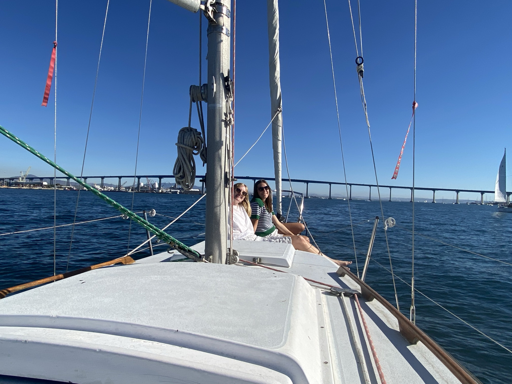

Update! I've been sailing around San Diego bay almost every weekend, "learning the ropes" and gaining confidence. This post is a dump of photos from recent day sails, since I have not been on any longer journeys. My next sailing goal is to sail from South San Diego bay to Mission Bay and spend the night at anchor in mariner's basin.
